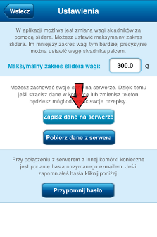
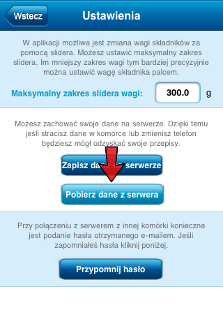

Aplikacja umożliwia zapisanie i odtworzenie wszystkich danych.
Dzięki temu jeśli przez przypadek odinstalujesz aplikację i zainstalujesz ponownie lub zmienisz komórkę - możesz odzyskać swoje produkty, potrawy i posiłki.
Jeśli chcesz mieć te same dane na iPadzie i iPhonie - również możesz tego dokonać wczytując dane zapisane wcześniej na serwerze.
Zapis danych:
-
Wejdź w zakładkę "Medtronic" i wybierz przycisk ustawień w prawym górnym rogu.

-
Wybierz przycisk "Zapisz dane na serwerze".

-
W formularzu, który się pojawi podaj swój adres e-mail. Na Twoją skrzynkę zostanie wysłany e-mail z hasłem do odzyskania danych.
Odczyt danych zapisanych na serwerze, w dowolnej aplikacji "Medtronic":
-
Wejdź w zakładkę "Medtronic" i wybierz przycisk ustawień w prawym górnym rogu.
-
Wybierz przycisk "Pobierz dane z serwera".

-
W formularzu, który się pojawi, podaj hasło wysłane na Twój e-mail po zapisaniu danych z komórki na serwerze.
Uwaga!
Wszystkie dane w telefonie zostaną zastąpione przez dane pobrane z serwera.